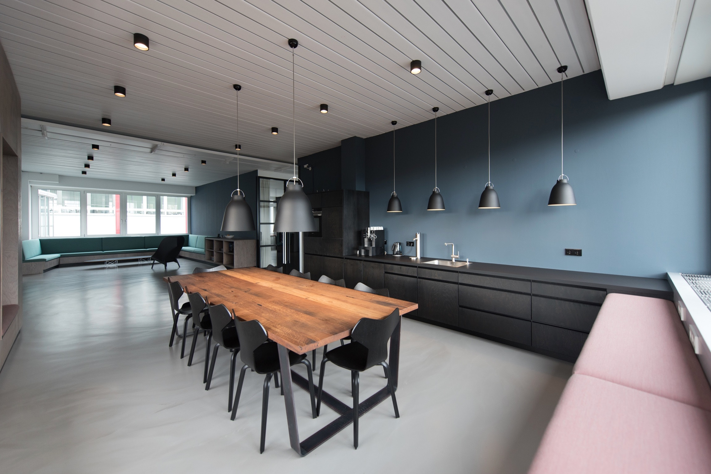

<body [class.dark-theme]="isDarkTheme">
  <mat-sidenav-container>  
    <mat-toolbar color="primary">
      <span>Toolbar</span>
      <span class="example-spacer"></span>
      <!-- <mat-icon class="example-icon">favorite</mat-icon>
      <mat-icon class="example-icon">delete</mat-icon> -->
      <mat-slide-toggle 
        class="example-margin" 
        (change)="toggleTheme()">Change theme</mat-slide-toggle>  
    </mat-toolbar>  
  </mat-sidenav-container>

  <!-- Slideshow container -->
  <div class="slideshow-container">
    <!-- Full-width images with number and caption text -->
    <div #slides class="mySlides fade" style="display:block">
            
      <div class="text">Caption Text</div>
    </div>

    <div #slides class="mySlides fade">
      
      <div class="text">Caption Two</div>
    </div>

    <div #slides class="mySlides fade">
      
      <div class="text">Caption Three</div>
    </div>

    <!-- Next and previous buttons -->
    <a class="prev" (click)="plusSlides(-1)">&#10094;</a>
    <a class="next" (click)="plusSlides(1)">&#10095;</a>
  </div>  
  <br>

  <!-- The dots/circles -->
  <div style="text-align:center">
    <span #dot class="dot" (click)="currentSlide(1)"></span> 
    <span #dot class="dot" (click)="currentSlide(2)"></span> 
    <span #dot class="dot" (click)="currentSlide(3)"></span> 
  </div>
</body>